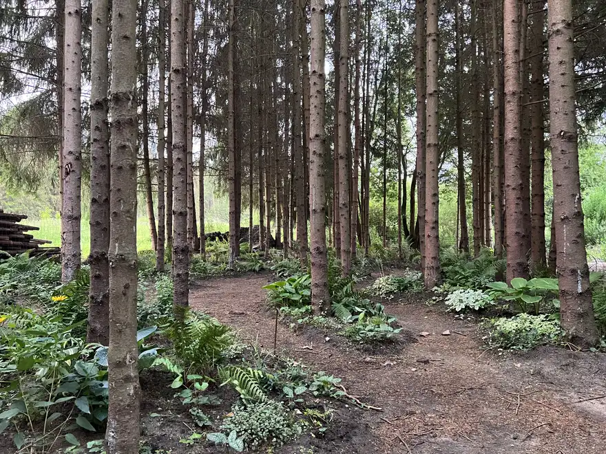

Tydzień 1
Rozmowa i punkt wyjścia
Poznaję Twoją historię ruchu, tryb pracy i ograniczenia. Sprawdzamy podstawowe wzorce bez testów do odmowy i ustalamy realistyczny plan.
Prace Duże · gm. Tarczyn · 5 min od S7 · prywatne studio 1:1
Prywatny trening siłowy i ruchowy 1:1 dla dorosłych 35–60+. W czasie Twojej sesji cała sala przy lesie jest wyłącznie dla Ciebie — pracujemy spokojnie, 1–2 razy w tygodniu, w cyklu 12-tygodniowym.
Bezpłatna, 15-minutowa rozmowa telefoniczna przed pierwszą wizytą — bez zobowiązań.
Filozofia pracy
Po czterdziestce ciało nie potrzebuje przypadkowego wycisku. Potrzebuje mądrej siły, ciszy i konsekwentnego rytmu, który mieści się w realnym tygodniu pracy.
Spokojna alternatywa dla głośnych siłowni — dla osób, które chcą zadbać o plecy, stawy i samodzielność na kolejne dekady.
01 / Punkt wyjścia i proces
Wybierz sytuację najbliższą Twojej codzienności, aby zobaczyć modelowy sposób startu oraz dobór obciążeń.
Modelowy scenariusz 01
Typowy start i pierwsze kroki
Od spokojnej rozmowy i prostych prób ruchowych bez presji. Zamiast wyczerpania na pierwszych spotkaniach budujemy pewność stawów i podstawową siłę, dzięki której wychodzisz ze studia z energią.
Rytm w tygodniu
1–2 spotkania 1:1 w tygodniu plus prosty, 10-minutowy zestaw domowy między wizytami.
Kierunek celu: powrót do swobodnego ruchu bez wielodniowego przemęczenia.
Przykładowe modele organizacji współpracy — nie są historiami konkretnych osób ani gwarancją wyniku.
Oś 12 tygodni · Przewidywalny rytm
Tydzień 1
Poznaję Twoją historię ruchu, tryb pracy i ograniczenia. Sprawdzamy podstawowe wzorce bez testów do odmowy i ustalamy realistyczny plan.
Tydzień 6
Sprawdzamy reakcję organizmu przy realnym grafiku zawodowym. Upraszczamy to, co stawia opór, i dostrajamy obciążenia do wyjazdów.
Tydzień 12
Zestawiamy punkt startowy ze zmianami w sile, komforcie pleców i energii. Na tej podstawie spokojnie decydujesz o kolejnym kwartale.
02 / Rytm, ceny i pierwsza wizyta
Nie kupujesz długiego pakietu w ciemno. Zaczynamy od bezpłatnej rozmowy i pojedynczego spotkania wprowadzającego.
Krok 1 · Bez zobowiązań
0 zł / ok. 15 min
Bezpłatna rozmowa telefoniczna o Twojej sytuacji i terminach.
Krok 2 · Pierwsza wizyta
220 zł / 60–75 min
Jednorazowe spotkanie wprowadzające z planem na start.
Krok 3 · Prowadzenie 1:1
250 zł / sesja 60 min
Cykl 12 tygodni w rytmie 1× lub 2× w tygodniu.
Planer rytmu i kosztu
Koszt / 4 tygodnie
1 000 zł
Skala w cyklu 12 tyg.
12 sesji
Jedna sesja 1:1 w studiu w tygodniu wsparta krótkim, 10–15-minutowym zestawem domowym. Wygodne rozwiązanie przy napiętym grafiku lub dojazdach z okolic Piaseczna i Warszawy.
Przykładowy rozkład tygodnia
12 tygodni to okres planowania i przeglądu postępów — szczegółowe zasady rozliczeń i odwoływania wizyt otrzymasz przed rozpoczęciem współpracy. Prowadzę ograniczoną liczbę osób jednocześnie.
Przebieg pierwszej wizyty · 220 zł / 60–75 min
Faza 01 · 15–20 minut
Spokojnie omawiamy Twój grafik pracy, wcześniejsze doświadczenia z ruchem oraz ewentualne zalecenia po zakończonej rehabilitacji. Bez pośpiechu i bez oceniania.
03 / Przestrzeń, prowadzący i dojazd


Założyciel i trener prowadzący
Stworzyłem Studio Las, ponieważ przez lata pracy w dużych klubach widziałem, jak pośpiech i hałas utrudniają spokojną, mądrą pracę z ciałem. Prowadzę dorosłych 1:1 w przewidywalnym rytmie, pomagając budować siłę i sprawność na kolejne dekady.
Lokalizacja i dojazd
04 / Najczęstsze pytania
Nie. Większość osób zaczyna po kilkuletniej przerwie lub pracy siedzącej. Obciążenie i tempo zawsze dobieram do aktualnych możliwości, żeby ciało miało czas na spokojną adaptację.
Dla większości zapracowanych dorosłych optymalne jest 1 lub 2 dobrze ułożone spotkania w tygodniu w studiu, wsparte prostym zestawem krótkich ćwiczeń w domu.
Nie. 15-minutowa rozmowa telefoniczna jest bezpłatna i służy wyłącznie wzajemnemu poznaniu, sprawdzeniu dostępności terminów oraz omówieniu zasad współpracy.
Plan dopasowuję do realnego życia — przed wyjazdem lub w bardziej intensywnym tygodniu zmniejszam obciążenia albo przygotowuję krótki wariant wyjazdowy, bez presji i poczucia winy.
Wygodny strój sportowy, czyste obuwie zmienne oraz — jeśli posiadasz — opisy badań lub zalecenia po zakończonej rehabilitacji.
05 / Kontakt
Wybierz krótki formularz pierwszego kontaktu albo odezwij się bezpośrednio. Jeśli nie odbieram, prowadzę sesję — oddzwaniam zazwyczaj tego samego lub kolejnego dnia roboczego.
Formularz pierwszego kontaktu
Wybierzesz dogodną porę rozmowy (0 zł / ok. 15 min) i ogólny kierunek celu — bez konieczności wpisywania diagnoz ani wyników badań.
Przejdź do krótkiego formularza kontaktu →